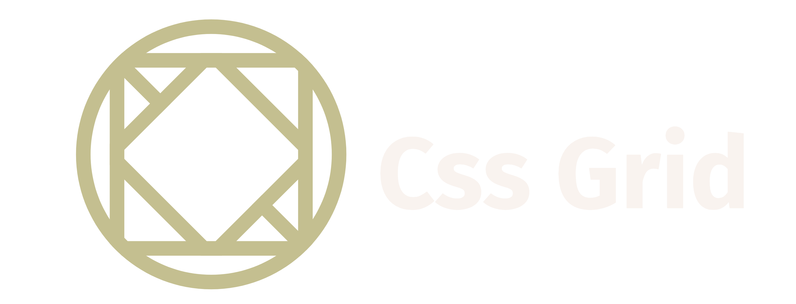

Css Grid

Inicio
Tema Seleccionado
Mockup
Acerca de
CSS Grid
Que es Css Grind?
style="text-align: center ;"
Y Porque Con Grid?
style="text-align: center ;"
Ejemplo de uso de Grid
style="text-align: center ;"
Grid vs Flexbox
style="text-align: center ;"